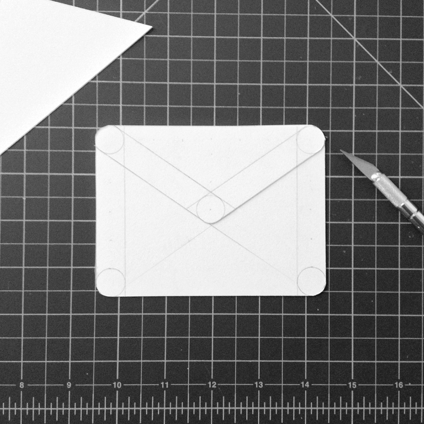
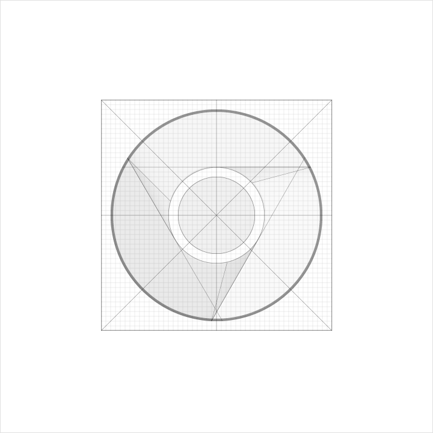

产品图标
产品图标以视觉形式传递产品与品牌形象，以简单明了、平易近人的方式声张产品的核心理念与意图。尽管每个产品图标在视觉呈现方面有所不同，但仍可以通过要素的重复与概念的再现，达成同个品牌下所有图标内外在的统一。
设计方式
为了赋予图标更强的表现力，在创作中产品图标被当作实体进行设计。但在界面中产品图标仍是一种借 Material 显示的图像。因此，产品图标在视觉上虽由简单的图形构成，但可以像纸一样被裁剪、折叠，并且质地结实、边缘清晰，具有细微的高光与连贯的阴影。

实物原型

光影观察

虚拟再现

加工成型
基准网格
质感设计以网格工具为基础建立标准化的图标设计系统，既维持统一，又不失灵活。
基准网格由以 4dp × 4dp 单元格构建的 192dp × 192dp 网格，与在其上的基准图形和参考线组成。
4
192
192
网格
基准图形与参考线
基准图形是用以确定单个图标与画布比例与多个图标间保持一定视觉比例的参考图形。
正方形
边长：152dp
圆形
直径：176dp
纵向矩形
宽：128dp
高：176dp
横向矩形
宽：176dp
高：128dp
对正交线及对角线加以利用，实现精确的几何构图。


图标结构
构建同一品牌下图标的共有结构是维持视觉一致性的主要手段。在质感设计中，产品图标由底层到顶层进行设计，并分为如下组件：
- 光照层
- 背景层
- 前景层
- 颜色
- 阴影
产品图标组成成分

产品图标组成成分的层次关系